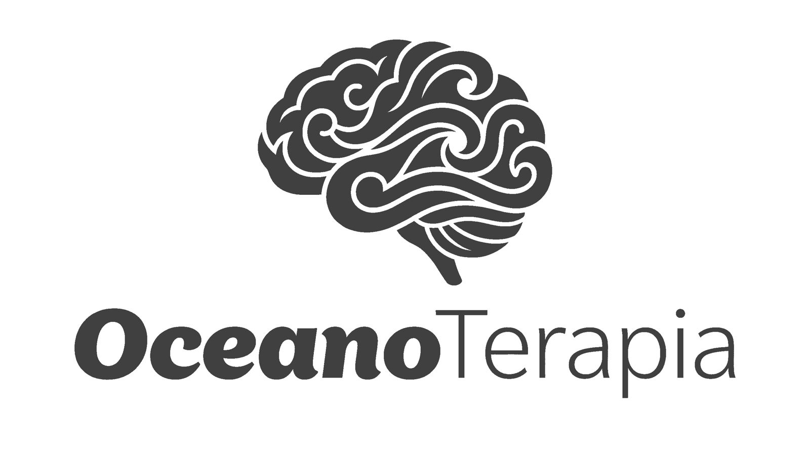

Responda 7 perguntas rápidas e descubra, em 2 minutos, como o oceano pode te trazer de volta ao seu eixo, com um diagnóstico feito pra você.
Sem julgamento. Só um espelho honesto, e um caminho.
Pra onde eu envio o seu resultado completo + o e-book Oceano Terapia?
🔒 Seus dados estão seguros. Você recebe o e-book e nada de spam.
Preencha nome, e-mail e WhatsApp pra continuar.
Cruzando o que você sente com o que o oceano pode fazer por você.
Oceano Terapia · um respiro pra sua mente